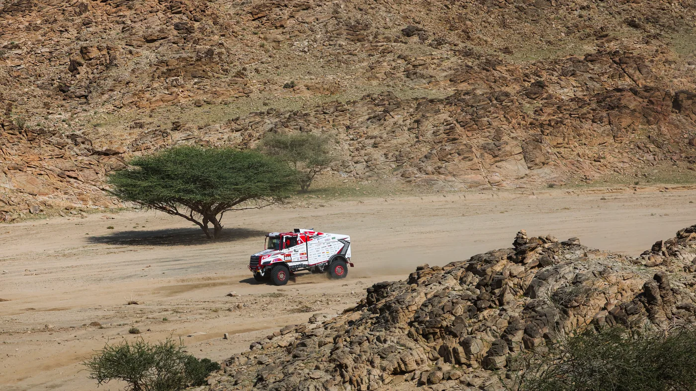

Hino Motors confirmó el 31 de agosto que competirá en el Dakar 2027, previsto del 1 al 15 de enero en Arabia Saudita. Hino Team Sugawara volverá con un camión basado en el Hino 600 utilizado durante 2026, sometido a un programa de evolución enfocado en suspensión, durabilidad y confiabilidad.
La edición tendrá unos 8.000 kilómetros de recorrido durante 14 días, con etapas en bucle, jornadas maratón y asistencia limitada. El inicio y la llegada estarán en King Abdullah Economic City, sobre el mar Rojo, y la ruta describirá un gran circuito por el oeste saudita.
La prioridad está en la suspensión
El equipo considera que las mejoras de suspensión aplicadas el año pasado dieron resultado y ahora busca refinarlas. Una plataforma más estable permite que el conductor mantenga el acelerador sobre piedra, ondulaciones y cortes sin perder control ni castigar innecesariamente el chasis.
En competición, una suspensión rápida no consiste sólo en aumentar recorrido. Amortiguación, resortes, geometría, neumáticos y reparto de peso deben trabajar juntos. Si la rueda rebota o llega con violencia al final de carrera, disminuye la tracción y crece la carga sobre dirección, rodamientos y bastidor.
El objetivo declarado es elevar la velocidad promedio, no alcanzar un pico aislado. En un rally largo, sostener un ritmo limpio con menos golpes y paradas suele ser más valioso que ganar segundos en un tramo y perder horas reparando.
Aprender de los problemas finales
Teruhito Sugawara explicó que el equipo encontró señales positivas en 2025 y 2026, pero los problemas de las etapas finales impidieron el resultado esperado. En 2026 el camión llegó a la meta, aunque terminó decimoquinto en su categoría después de afrontar inconvenientes en la transmisión.
Un Dakar convierte cada avería en información. Las piezas retiradas, temperaturas, golpes y registros de conducción permiten reconstruir qué ocurrió. El nuevo vehículo madurará sobre esa experiencia en vez de partir de una hoja en blanco.

Tres mecánicos que llegan desde concesionarios
Hino seleccionó a Yoshihiko Yaginuma, Takahiro Takekoshi y Yuta Oka entre postulantes de su red japonesa. Desde 1995, el programa llevó al rally a 67 mecánicos procedentes de 32 concesionarios. Para la marca, la competencia funciona también como formación técnica.
Los especialistas deben diagnosticar con pocas herramientas, decidir qué reparar y devolver el camión a pista dentro de una ventana limitada. La presión es distinta a la de un taller convencional, pero las bases son las mismas: método, limpieza, conocimiento del sistema y comunicación.
Qué se somete a prueba
- Suspensión: amortiguadores, anclajes y control de rueda reciben impactos continuos.
- Transmisión: arena, baja velocidad y alto par elevan la temperatura de aceites y componentes.
- Refrigeración: polvo y calor reducen el intercambio si los radiadores se obstruyen.
- Neumáticos: presión y carcasa deben equilibrar tracción, temperatura y resistencia a cortes.
- Chasis: las cargas alternadas revelan fisuras y concentraciones de esfuerzo.
- Mantenimiento: acceso, herramientas y repuestos condicionan el tiempo real de reparación.
Lecciones para una flota común
Un camión de rally no es una unidad de serie y sus soluciones no deben trasladarse directamente. Sin embargo, el proceso de mejora sí resulta útil: registrar fallas, identificar el mecanismo, cambiar una variable y validar otra vez bajo carga.
En minería, construcción o transporte rural argentino, la velocidad promedio también depende de estabilidad y disponibilidad. Una suspensión mal adaptada aumenta fatiga, desgaste de neumáticos y daños en la carga. La configuración debe responder al terreno real, no a una cifra genérica.
La importancia del mantenimiento preventivo
En el Dakar, cada jornada termina con una inspección aunque el vehículo no muestre síntomas. Fugas pequeñas, fijaciones flojas o temperaturas inusuales se buscan antes de que se conviertan en abandono. En una flota, la misma lógica evita que una unidad falle lejos de la base.
Conviene combinar recorrida visual, historial y mediciones. El polvo acumulado, un neumático que trabaja más caliente o una cruceta con juego cuentan la historia del ciclo. Corregir temprano suele costar menos que reparar el daño encadenado.
Repuestos bajo una logística extrema
Durante una carrera no es posible transportar cada componente del camión. El equipo debe priorizar piezas con alta probabilidad de falla, elementos que detienen la marcha y herramientas capaces de resolver varias tareas. Ese criterio también sirve para una flota que opera lejos de centros urbanos.
Un stock razonable parte del historial, no del miedo. Filtros, correas, mangueras, sensores críticos y componentes de transmisión deben relacionarse con cantidad de unidades, distancia al proveedor y tiempo máximo de inmovilización aceptable. Llevar mucho sin rotación también tiene costo y riesgo de deterioro.
Primer Dakar dentro de ARCHION
La edición 2027 será la primera participación de Hino como parte del nuevo grupo ARCHION. El programa deportivo seguirá bajo la identidad Hino Team Sugawara y buscará completar por 36 vez consecutiva una de las pruebas más difíciles del mundo.
Más allá del resultado, el proyecto será una vitrina para suspensión, resistencia y capacidad del servicio técnico. La meta principal es sencilla de formular y difícil de cumplir: mantener el Hino 600 avanzando durante dos semanas sin que una falla termine la carrera.